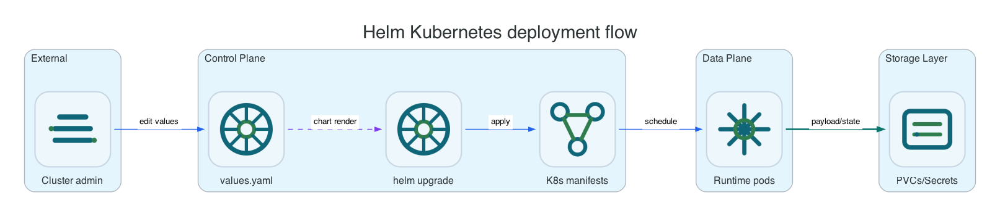

Reference / Platform / Helm
Helm and Kubernetes reference.
Use this reference when Helm owns the Li9 S3 release and chart values are the deployment contract instead of OpenShift CRDs.
Helm installation is a separate lifecycle path from the OpenShift operator. Do not install the Helm release into the same namespace where an
S3Storage CR is already controlled by the operator.
Ownership Model

| Layer | Owner | Kubernetes Objects | Operational Rule |
|---|---|---|---|
| Release lifecycle | Helm | Release Secret, rendered manifests, hooks if enabled | Upgrade and rollback through Helm commands, not by editing generated workloads directly. |
| Runtime workloads | Chart templates | Deployments, StatefulSets, Services, PVCs, ConfigMaps, Secrets | values.yaml is the desired state source. |
| Bucket provisioning | Runtime API or S3 API | Generated credentials outside CRD status | Use the chart-provided control API or S3-compatible APIs because Helm does not install Li9 CRDs. |
| Observability | Chart values | ServiceMonitor, PrometheusRule, dashboard ConfigMaps when enabled | Keep monitoring resources owned by the Helm release for repeatable uninstall. |
Values Areas
| Values Area | Purpose | Examples |
|---|---|---|
images | Runtime image repository, tag, pull policy, and pull secrets. | Online Quay path or internal registry mirror. |
region | Default and allowed S3 regions for request validation and bucket creation. | li9-mgm01, us-east-1. |
gateway | Client endpoint exposure and route/ingress behavior. | Internal Service only, OpenShift Route, Kubernetes Ingress. |
runtime | Replica counts and service-level scaling choices. | Gateway replicas, storage-node replicas, timeouts. |
storage | Data topology, metadata placement, PVC classes, archive placement. | PerNodePVC, SharedPVC, DedicatedPVC metadata, SharedDataPVC metadata. |
observability | Metrics, ServiceMonitor, PrometheusRule, and dashboard delivery. | User-workload Prometheus or namespace-local scraping. |
security | TLS, internal certificates, runtime Secrets, and network policies. | Generated certs for test, externally managed certs for production. |
Helm Operational Checks
export LI9_NS=li9-s3-helm
helm status li9-s3 -n "${LI9_NS}"
helm get values li9-s3 -n "${LI9_NS}" --all
kubectl get deploy,sts,svc,pvc,secret,configmap -n "${LI9_NS}" -l app.kubernetes.io/part-of=li9-s3
kubectl get events -n "${LI9_NS}" --sort-by=.lastTimestamp | tail -40